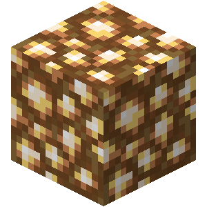
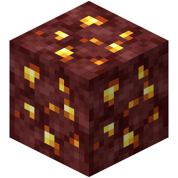
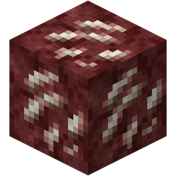
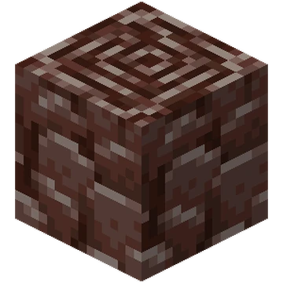

La Piedra luminosa es un bloque emisor de luz que se encuentra en estructuras ramificadas, que se encuentra colgando de techos y voladizos en el Nether.
La mena de oro del Nether es una mena bastante común encontrada en el Nether, y suelta pepitas de oro al ser minada.
La mena de cuarzo del Nether es una mena abundante encontrada en El Nether, y suelta cuarzo del Nether al ser minada.
Los escombros ancestrales es una mena rara que se encuentra en El Nether y es la principal fuente de fragmentos de netherita. Su alta resistencia a las explosiones la vuelve inmune a las explosiones normales. En forma de objeto, flota sobre lava y no puede ser quemada por ninguna forma de fuego.